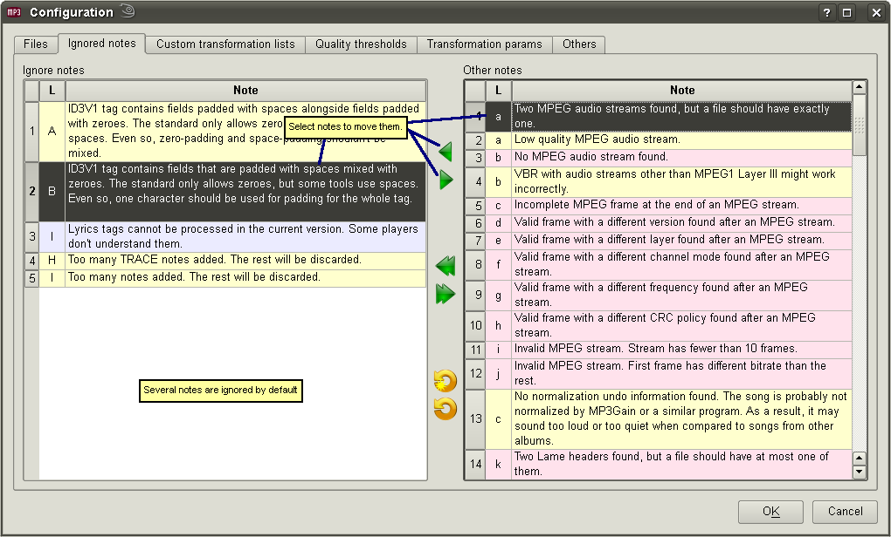

Config - Files
User's guide
- Config - Ignored notes
Config - Custom transformations

This is the place to go for choosing which notes shouldn't be shown.
Config - Files
User's guide
- Config - Ignored notes
Config - Custom transformations